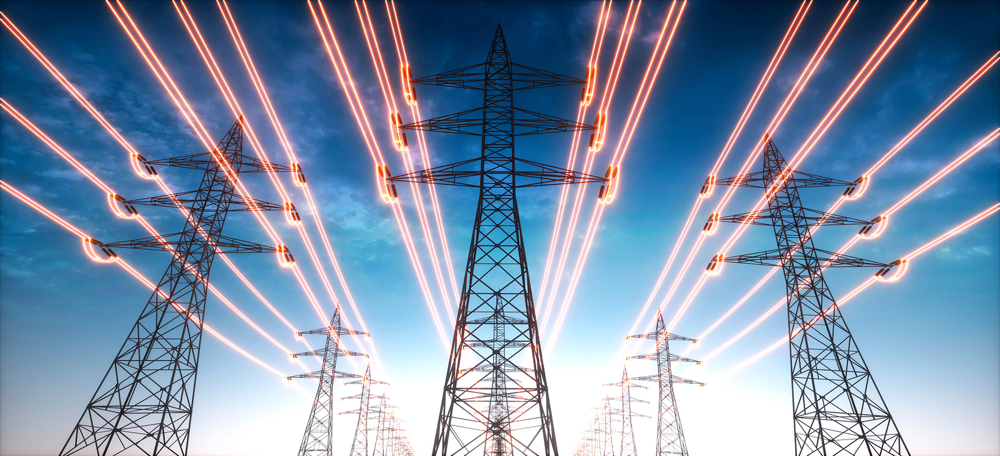
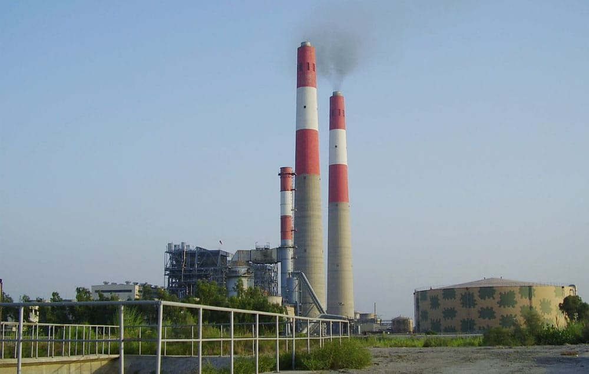
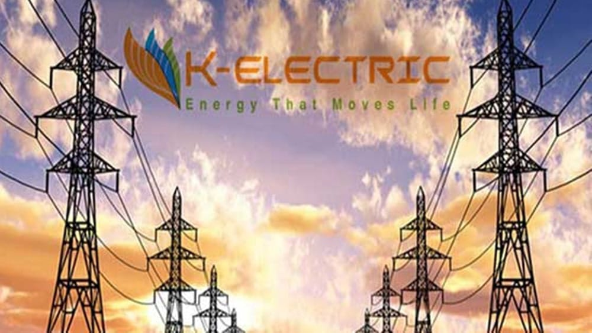
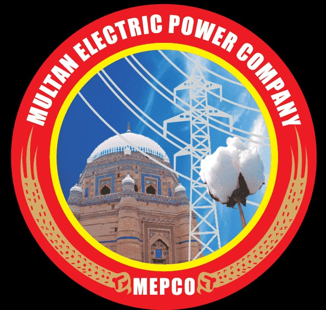

The provision of electricity in Pakistan is primarily managed by various government-owned entities. Pakistan's electricity generation is primarily managed by a number of public-sector power generation companies. Some of the major entities include: Pakistan Electric Power Company (PEPCO)

1.Water and Power Development Authority (WAPDA)
2.Karachi Electric (KE)
3.MEPCO
The Water and Power Development Authority (WAPDA) is a government-owned organization in Pakistan responsible for managing water and power resources. Established in 1958, WAPDA plays a crucial role in the country's energy and water sectors. It operates under the administrative control of the Ministry of Water Resources. WAPDA is tasked with the development, maintenance, and operation of water and hydropower projects in Pakistan. It oversees the planning and execution of major dams, barrages, and power stations, contributing significantly to the country's economic development and energy needs. One of WAPDA's primary functions is the development of hydropower projects. It has been instrumental in constructing major dams like the Tarbela Dam, which is one of the largest earth-filled dams in the world, and the Mangla Dam, providing critical water storage and electricity generation capacity.
Karachi Electric (KE) is a major public utility company responsible for the generation, transmission, and distribution of electricity in Karachi, Pakistan's largest city and economic hub. It is a critical entity in ensuring the availability of electricity to the residents and industries of Karachi. As of my last knowledge update in September 2021, here is some information about Karachi Electric: Karachi Electric (KE) is a vertically integrated utility company responsible for the generation, transmission, and distribution of electricity in Karachi, Pakistan's largest city and economic hub. It serves as a critical entity in ensuring the availability of electricity to the residents and industries of Karachi.
MEPCO, or Multan Electric Power Company, is one of the largest electricity distribution companies in Pakistan. It is responsible for the distribution of electricity in the Multan region and its surrounding areas. MEPCO plays a vital role in supplying electricity to both residential and industrial consumers within its jurisdiction. As a government-owned entity, MEPCO operates under the umbrella of the Water and Power Development Authority (WAPDA). It is tasked with the crucial function of distributing electricity to end-users, ensuring that power is delivered reliably and efficiently. The Multan Electric Power Company serves a significant geographic area, covering several districts in Punjab province, including Multan, Khanewal, Vehari, Lodhran, Sahiwal, and Rahim Yar Khan. This extensive coverage means that MEPCO has a substantial customer base and serves a diverse range of communities and industries.
 Government Services Portal
Government Services Portal